Reader · design mock-ups
A Home page to start from
After signing in, the reader opens straight onto the library list. These mock-ups replace that with a Home page, reached by clicking the R at the top of the rail. It opens on the page of the paper you stopped reading, and three other views are a click away.
These pages were built by hand in the reader's own colours and type; the papers, highlights and notes in them are sample data. None of it is built yet. The full write-up is in the reader repository's docs/landing-ideas.md.
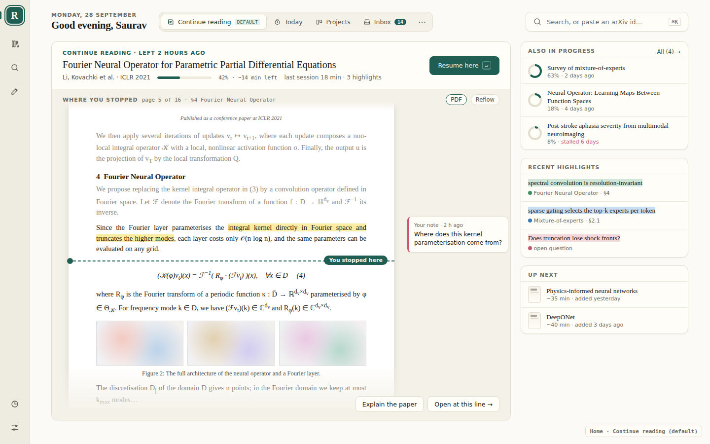
Continue reading, the default
The paper you last opened fills Home, and most of the page you stopped on is shown: the lines you'd read (dimmed), your highlight with its note in the margin, a You stopped here line, and what comes next. Resume here (↵) opens the paper at exactly that line. To draw it, the reader would save the top visible line as a text anchor, the way it already anchors highlights, and keep a small snapshot of the page when you leave.
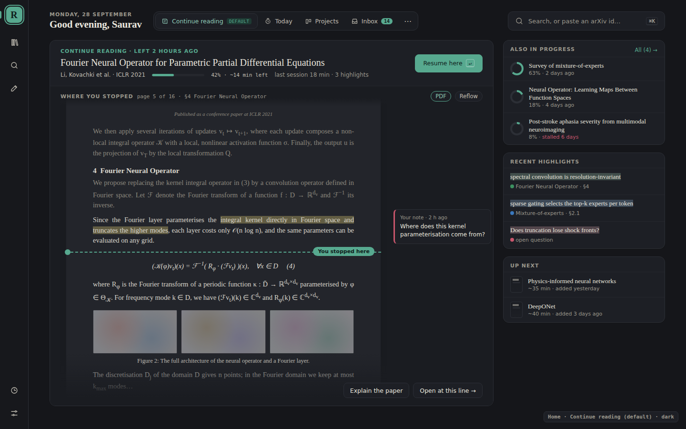
In the dark theme
The page preview dims with the rest of the app rather than staying bright white.
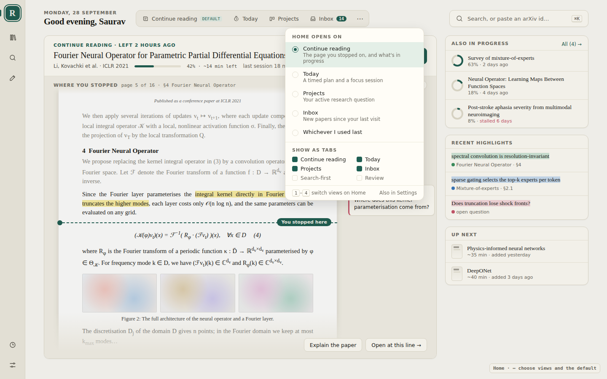
Choose the views
The switcher holds Continue reading, Today, Projects and Inbox, on keys 1–4. Its ⋯ menu picks which one Home opens on (or whichever you used last), and which views show as tabs.
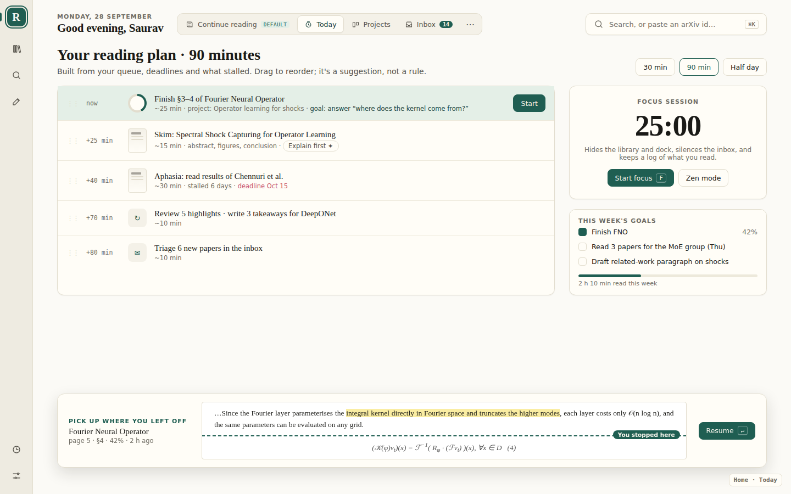
Today
Pick how much time you have and Home proposes a plan from your queue, deadlines and stalled papers; drag to reorder. A focus session hides everything but the paper. On every view other than the default, a strip at the bottom keeps the lines where you stopped and Resume one key away.
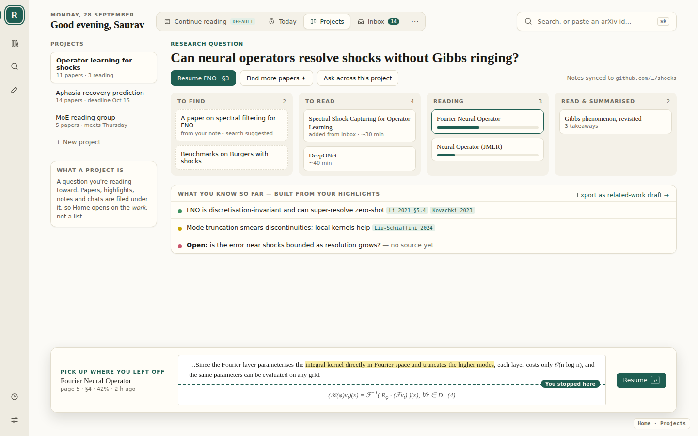
Projects
A project is a question you're reading toward. Its papers sit in lanes, and what you know so far is built from your highlights, each with its citation; open questions are marked as having no source yet.
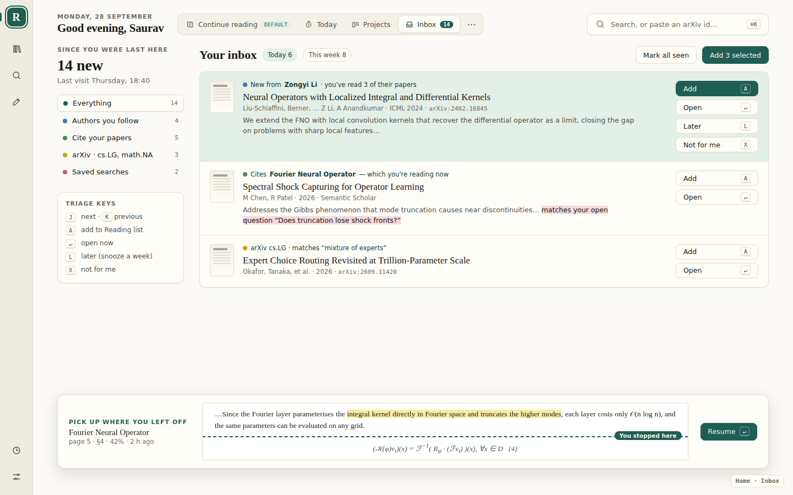
Inbox
New papers since your last visit: from authors you've read, papers citing the one you're reading, arXiv categories and saved searches. Triage from the keyboard: J/K to move, A to add, L for later, X for not for me.
The rest of the workflow
Ideas for how you get from Home into a paper and back, and how a paper ends up as something you've written.
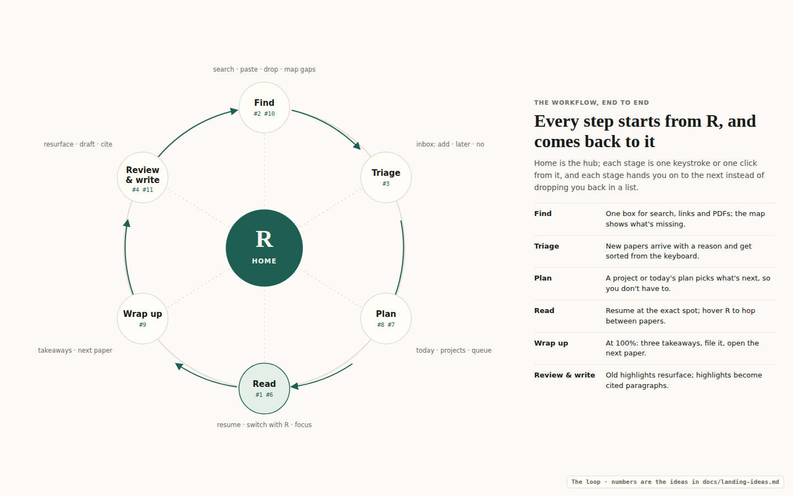
The loop
Find → Triage → Plan → Read → Wrap up → Review & write. Every step is one click from R, and each hands you to the next rather than back to a list.
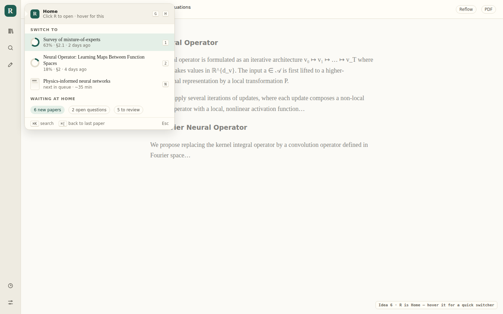
Hover R to switch papers
Click R for Home; hover it inside a paper for a quick switcher: other papers in progress on number keys, the next in the queue on N, and ⌘[ back to the last paper.
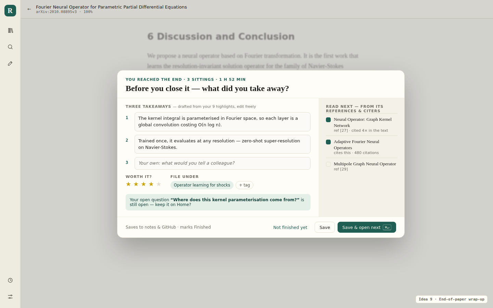
Wrap up at the end of a paper
At 100%, three takeaways drafted from your highlights, a rating and where to file it, and the next paper picked from its references. Save & open next (⌘↵) keeps the loop going.
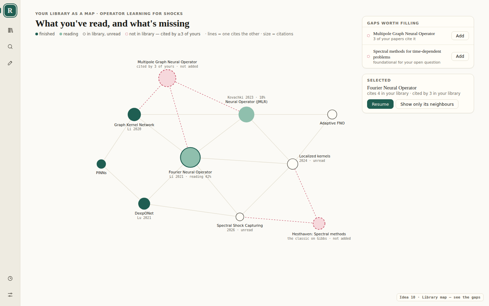
Library map
Your papers drawn as who cites whom. The dashed nodes are papers several of yours cite but you don't have yet, each with an Add button.
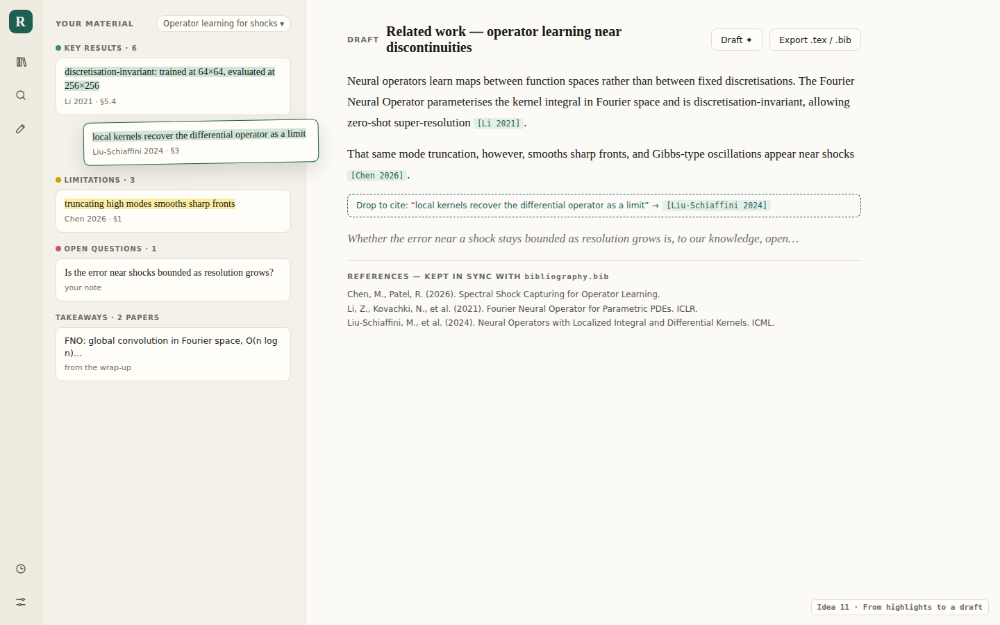
From highlights to a draft
Drag a highlight into a draft and it becomes a citation; the reference list stays in step with the bibliography in the Git notes repository.
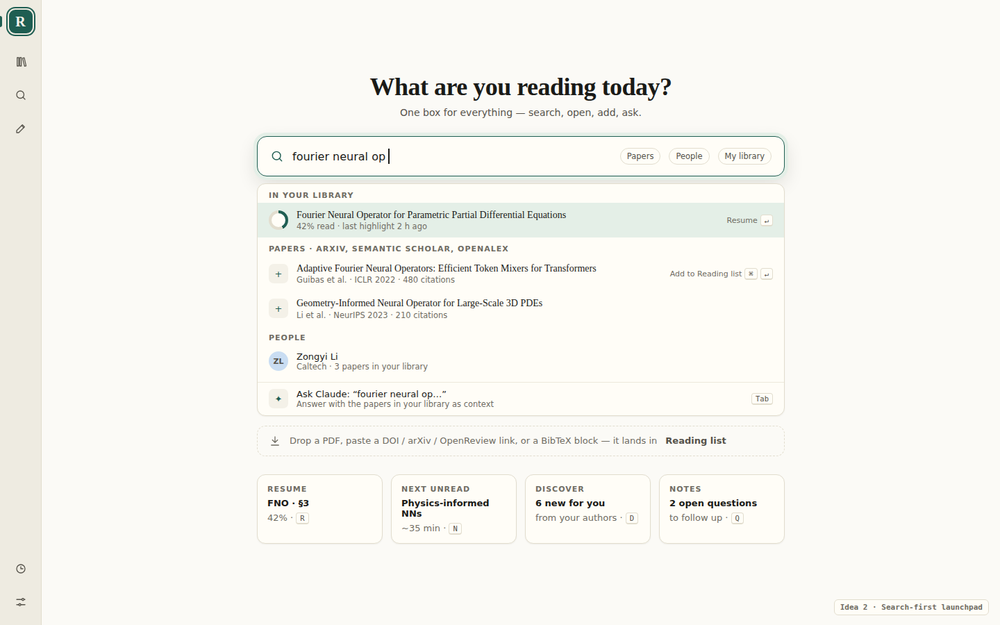
Search-first (an optional tab)
One box that searches your library first, so a paper you have resumes rather than being added twice, then the sources, people, and Ask Claude.
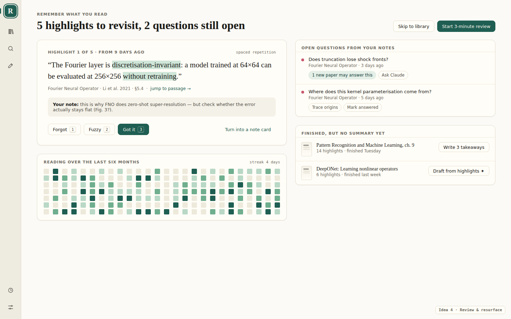
Review (an optional tab)
A short pass over old highlights, the questions still open in your notes, and finished papers that have no summary yet.
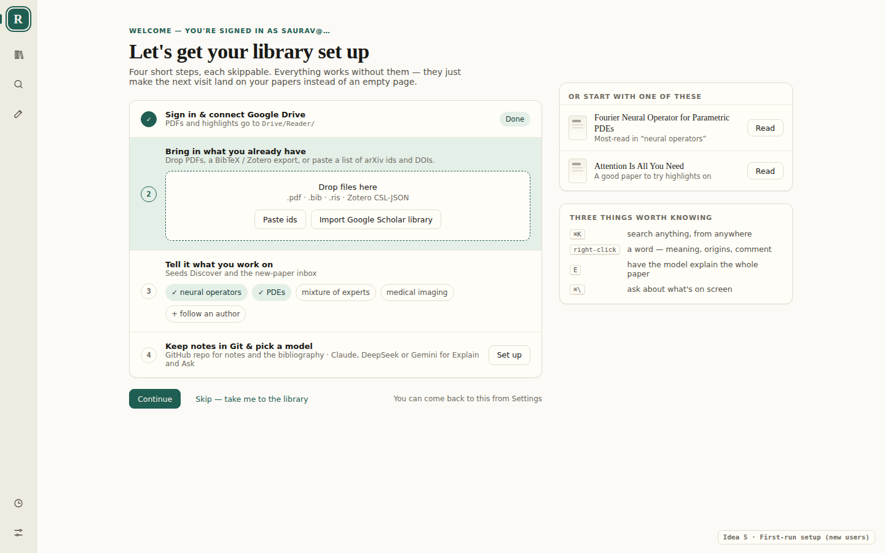
First visit
For someone signing in for the first time: a checklist anyone can skip, two starter papers, and the four shortcuts worth knowing. It stands in for Home until the library has a few papers.
Still to decide
- Should a collection open as a small Home of its own, with the page you last read in it?
- Are Projects a new thing, or collections with a question attached?
- A snapshot of the page taken when you leave, or the live page drawn each time Home opens?
- Reopen the last paper directly when it was open less than an hour ago, skipping Home?